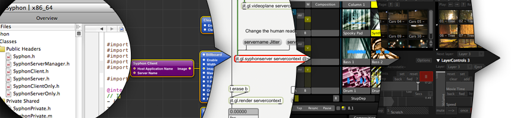

Syphon Recorder
Record video in realtime and capture stills from any Syphon Enabled Application
Download
Download Syphon Recorder (version 19)
The previous version, 15, is available here. It does not support macOS Catalina.
About
Syphon Recorder 18 was made possible by a lot of hard work from David and Ray at Vidvox.
Syphon Recorder was originally written by Tom Butterworth and Anton Marini. Syphon Recorder is free, with no restrictions on its use. For support please check the Help menu in the app.
Changes
Release 19
- Fix issue recording audio on older macOS versions.
Release 18
- Add support for macOS Catalina.
- Add support for H.264 video.
- Add support for Apple Lossless audio.
- Remove support for the Sheer codecs.
Release 15
- Fix an issue which could cause checks for new versions to fail.
Release 14
- Fix reliability issues affecting MacOS 10.11 El Capitan.
Release 13
- Add support for recording mono audio from mono devices.
- Add support for recording more than two audio channels when devices support it.
- Fix issues recording AAC from some audio hardware.
Release 12
- Fix an issue which caused low frame-rates on MacOS Mavericks if the app was off-screen.
Release 11
- Fix an issue which caused corrupted sound to be recorded from some third-party hardware.
- Fix an issue which caused unexpected behaviour when using some third-party audio hardware.
Release 10
- If a recording is unexpectedly ended an attempt will be made to recover it when recovery becomes possible.
- Remove support for the Motion JPEG B codec. If you were previously using this codec, Photo-JPEG will be selected instead.
- Fix an issue which caused some recordings to exhibit a color-shift when viewed in some applications.
- Fix an issue which caused unexpected file names to be used occasionally.
- Add support for Retina displays.
Release 9
- Fix an issue which caused a slight color-shift in recordings.
- Add support for the Photo-JPEG codec.
- Improve image quality when recorded dimensions exactly match the source.
Release 8
- Add support for recording AAC audio.
- Improve audio/video synchronization.
- Fix an issue with handling some unusual Syphon servers.
Release 7
- Fix a crash which could occur if you recorded a still image as a movie with an audio track. Thanks to Adam Fenn for reporting this.
- Fix a memory leak.
Release 6
- Bug fixes
- Interface tweaks
Release 5
- Append date and time to saved recordings and snapshots
- Fix a problem which arose if you took a lot of snapshots in quick succession
Release 4
- Add support for Apple ProRes 4444 codec (requires Final Cut Studio be installed)
- Add support for Sheer codecs (www.bitjazz.com/sheervideo/)
- Add preference to ignore the alpha channel for codecs which support it
- Improve performance and reliability
Release 3
- Changes to avoid a bug in MacOS X 10.6.7 which prevented sound ever being recorded.
Release 2
- Add support for Apple ProRes 422 codecs (requires Final Cut Studio be installed)
- Fix issue where movies were unplayable if the app quit while recording
- Create a playable movie even if a disk becomes full while recording
- Improve recovery and reporting associated with other less common errors
Release 1
- Initial Public Beta